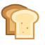
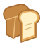
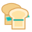
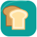

STL BREADSLICER · LOGO-STUDIE
Ein Toast. Sechs Richtungen.
Abgesetzte Scheibe als gemeinsames Motiv — in groß und als kleines App-Symbol.

01

24 px
01 · Goldener Klassiker
Warme Kruste, helle Scheibe, leicht versetzt.
STL BreadSlicer

02
24 px
02 · Toast × Türkis
Die App-Farbe verbindet Brot und Schnittebene.
STL BreadSlicer

03

24 px
03 · Klare Kontur
Reduziert, kontrastreich und auch einfarbig nutzbar.
STL BreadSlicer

04

24 px
04 · Räumlich geschnitten
Ein Brotlaib mit deutlich abgesetzter Schnittscheibe.
STL BreadSlicer

05

24 px
05 · Präziser Schnitt
Toast mit markierter, leicht herausgezogener Scheibe.
STL BreadSlicer

06

24 px
06 · App-Kachel
Kompaktes Symbol für App, Favoriten und Startbildschirm.
STL BreadSlicer